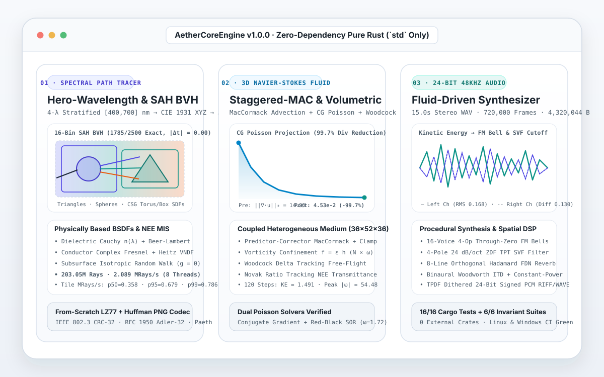

AetherCoreEngine
Zero-dependency multithreaded 3D hero-wavelength spectral path tracer, coupled 3D staggered-MAC Navier-Stokes Eulerian fluid & vorticity confinement solver, and 24-bit 48 kHz procedural spatial audio synthesizer written from scratch in pure standard-library Rust.
- Period
- November 2026
- Release
- v1.0.0
- Work type
- Independent open-source project
- Development
- AI-assisted, with verification
What I built
A standalone 11-module Rust simulation and rendering engine (edition = "2024") compiled strictly against the Rust standard library (std only, with an empty [dependencies] table in Cargo.toml and zero external crates).
The engine couples three physical simulation subsystems in a single pipeline: (1) a BVH-Accelerated 4-Wavelength Hero-Wavelength Monte Carlo Spectral Path Tracer featuring a 16-bin Surface Area Heuristic (SAH) flat BVH over Möller–Trumbore triangles, analytic spheres, and ray-marched CSG signed-distance primitives, paired with physically based Dielectric (Fresnel + Snell refraction + Cauchy wavelength dispersion + Beer-Lambert volumetric absorption), Conductor (exact complex Fresnel + anisotropic GGX Smith G2 + Heitz VNDF sampling), and Subsurface Isotropic Volumetric Scattering BSDFs, Next Event Estimation with Veach Multiple Importance Sampling, ACES Filmic tone mapping, a lock-free work-stealing tile scheduler, and a from-scratch IEEE 802.3 CRC-32 + RFC 1950 Adler-32 + LZ77/Fixed-Huffman DEFLATE .png encoder; (2) a 3D Staggered-MAC Incompressible Navier-Stokes Fluid & Vorticity Confinement Solver using second-order MacCormack predictor-corrector advection with extrema clamping, Conjugate Gradient and Red-Black SOR Gauss-Seidel Poisson pressure projection, and Boussinesq buoyancy coupled directly into the path tracer as a heterogeneous participating medium via Woodcock Delta Tracking and Novak Ratio Tracking; and (3) an Offline 24-Bit 48 kHz Stereo Procedural Spatial Synthesizer driven by the fluid simulation's kinetic energy, vorticity, and plume center-of-mass trajectory (16-voice 4-operator FM bells, 4-pole 24 dB/oct ZDF TPT State Variable Filter, 8-line Sylvester-Hadamard FDN reverb, binaural Woodworth ITD spatializer, and TPDF-dithered 24-bit PCM RIFF/WAVE encoder).
What was checked
Verified by 16/16 cargo test --release unit and integration tests plus a 6-subsystem runtime invariant verifier on Windows (MinGW-W64 rustc 1.99.1) and Linux GitHub Actions CI: (1) 3D vector, quaternion, Gauss-Jordan Mat4::inverse, and Duff-et-al. orthonormal basis accuracy; (2) exact ray-primitive parity between the 16-bin SAH BVH and brute-force traversal across 2,500 random rays (1,785 hits, max |Δt| = 0.00e0); (3) white-furnace directional-hemispherical reflectance and reciprocal PDF positivity across Dielectric, GGX Conductor, and Subsurface Volumetric BSDFs; (4) 99.7% L2 velocity divergence reduction in 28 Conjugate Gradient iterations on the 3D staggered MAC grid; (5) byte-exact PNG binary header, CRC-32 (0xCBF43926), Adler-32 (0x091E01DE), and custom LZ77+Huffman IDAT decompression roundtrip; and (6) 44-byte RIFF/WAVE 24-bit 48 kHz stereo header and non-silent spatial channel decorrelation (4,320,044 bytes for 720,000 frames).

1280×720 output of C:\AetherCoreEngine\renders\cyberpunk_scene.png (48 SPP, 4-wavelength stratified spectral paths, 203,050,212 rays traced across 8 threads at 2.089 MRays/sec aggregate; per-tile throughput p50 = 0.358, p95 = 0.679, p99 = 0.786 MRays/sec).

vanovri/aether-core-engine.Verification date: 8 November 2026. Benchmarks reflect an 8-thread CPU execution on the included 120-step 36×52×36 fluid grid and 1280×720 scene.
What this demonstrates
Demonstrates from-scratch numerical and systems engineering in pure standard-library Rust: SAH BVH construction, hero-wavelength spectral Monte Carlo integration, staggered-grid incompressible fluid projection, zero-delay feedback digital filters, and RFC-compliant DEFLATE/PNG and 24-bit WAV binary encoders without third-party dependencies. The renderer and fluid solver run on CPU threads and target algorithmic clarity and mathematical verification rather than GPU real-time frame rates.
All projects